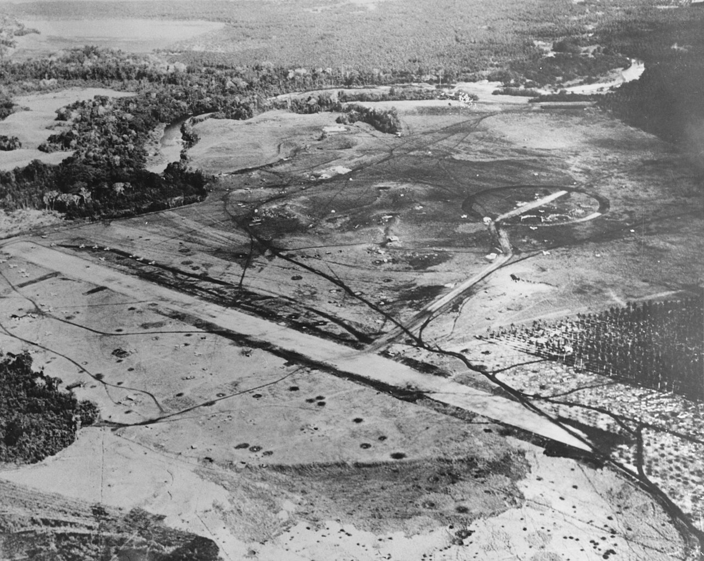
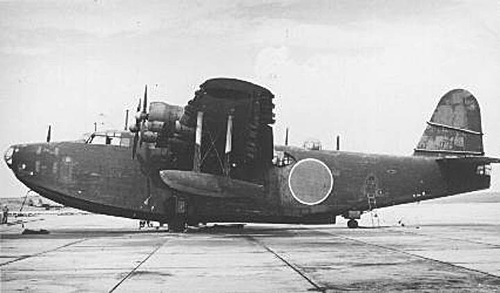
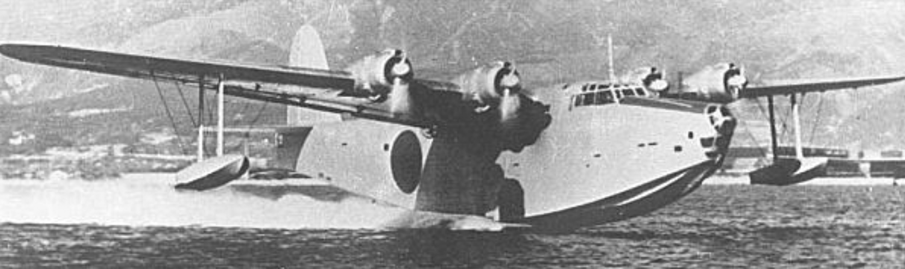
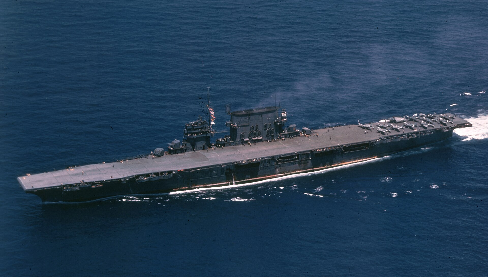
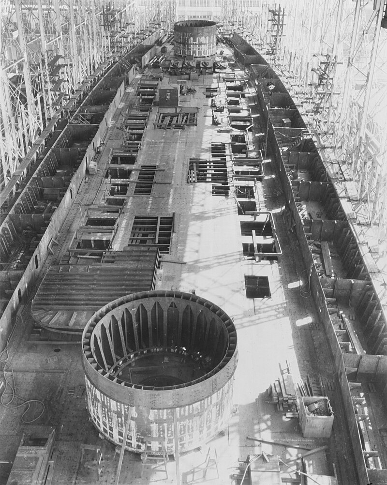
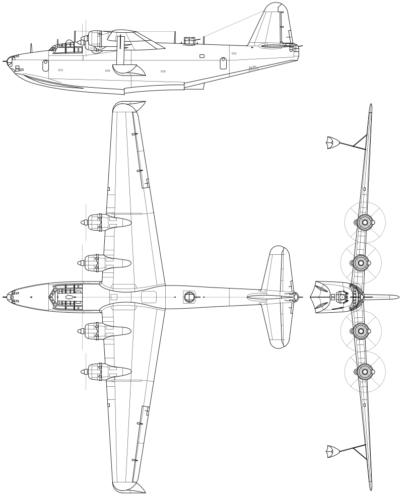
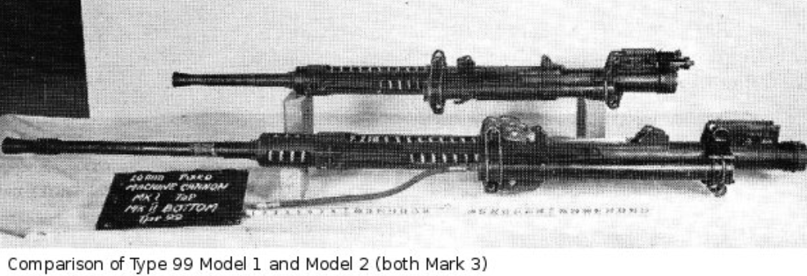

과달카날에서의 레이더 이야기 (5) - 레이더가 좋아한 항공기
게시: 2024-03-07T06:30:55+09:00
<레이더의 최애 먹잇감> 열악한 남태평양 과달카날에서 일본군이 버리고 간 활주로를 열심히 다듬은 미해군 공병대는 마침내 8월 20일 항공기 이착륙이 가능한 상태로 개장하고 그 기지 이름을 Henderson Field라고 지음. 일본군이 여기 활주로를 닦고 있다는 것을 안 미군이 화들짝 놀랐던 것과 동일하게, 미군이 곧 활주로를 완성한다는 정보에 일본군도 화들짝. 그래서 일본해군은 최강항모인 쇼가꾸와 즈이가꾸 등 항모 3척과 전함 2척, 순양함 9척과 다수의 구축함으로 구성된 함대에 상륙할 육군 1500까지 싣고 과달카날로 출동.
일본해군이 항모들을 대거 출동시킨 것은 과달카날의 헨더슨 비행장 따위 때문이 아니라 그 일대에 얼씬대는 것이 분명한 미해군 항모를 잡기 위한 것. 과달카날의 활주로는 꼭 항모를 동원하지 않아도 의외로 잡기가 쉬웠음. 라바울에서 출격하는 장거리 폭격기를 이용해도 되고, 항공기들이 까막눈이 되는 깜깜한 밤중에 전함이나 순양함을 동원하여 포격을 해도 됨.

(이미 항공기 이착륙이 개시된 이후인 1942년 8월 하순, USS Saratoga의 함재기가 촬영한 헨더슨 비행장의 사진. 사진 왼쪽에 항공기 몇 대가 주기된 것이 보이고, 활주로 좌우에 폭탄 및 포탄 구덩이가 잔뜩 나있음. 활주로에도 당연히 구멍이 뚫렸으나 그럴 때마다 해군 공병대가 달려들어 악착 같이 복구.)
그러나 항모는 잡기가 어려운 상대. 왜냐하면 그게 어디에 있는지 파악하기가 어렵기 때문. 적 항모를 잡으려면 일단 장거리 정찰기를 쫙 풀어서 그 위치를 파악한 뒤, 그 항모가 30노트의 속력으로 도망치기 전에 재빨리 폭격기들을 출동시켜야 했음. 그러자면 바로 근처에 폭격기를 출격시킬 비행장이 있어야 하는데, 그게 없으니 당장 근처에서 대기할 항모가 필요했던 것. 결국 미해군 항모를 잡으려면 첫 번째 단계가 정찰기를 푸는 것. 바꾸어 말하면 미해군으로서는 항모를 보호하기 위해서 가장 주력해야 했던 것이 일본해군의 장거리 정찰용 비행정들을 잡아내는 것. 그리고 그런 장거리 비행정들을 박멸하는 것에 가장 위력을 발휘했던 것이 바로 레이더. 일단 멀리까지 내다봐야 했던 정찰기 특성상 비행 고도가 꽤 높았음. 이건 미해군 CXAM 레이더에게 2가지 이점을 주었는데, 첫째, 수평선 위로 높이 나니까 아주 먼 100km 밖에서도 포착이 가능했고, 둘째, 그렇게 멀리서도 레이더에 잡힌다는 것은 자동으로 그 고도가 어느 정도인지 파악이 가능했다는 것. 이건 고도 측정이 곤란했던 CXAM 레이더에게는 땅 짚고 헤엄치게 해주는 격. 특히 CXAM 레이더 및 그 운용사들이 난감해했던 것은 여러 개의 타겟이 동시에 나타나는 상황이었는데, 컴퓨터가 없던 시절 여러 대의 목표물을 추적하면서 그 방향과 속도 등을 분석하는 것이 어려웠기 때문. 그러나 이런 정찰기들은 한 대씩 날아다녔으므로 CXAM에게는 정말 딱 맞는 먹잇감. 8월 21일, 역시 정찰을 돌던 USS Wasp 소속 돈틀리스 SBD 폭격기가 일본해군 Kawanishi H8K 비행정을 격추한 것에 이어, 바로 다음날 USS Enterprise의 CXAM 레이더가 88km 밖에서 2.4km 고도로 나는 미확인 항공기를 발견하고 4대의 와일드캣을 그 쪽으로 출격시킴. 가보니 역시 또 가와니시 비행정. 간단히 격추시킴. 다만 이렇게 일본군 비행정들의 활동이 늘어난다는 것은 일본해군이 미해군 항모 사냥에 나섰다는 뜻.

(Kawanishi H8K 비행정, 연합군이 부르던 별명은 'Emily'.)

('에밀리'는 승무원 수가 10명에 20m 기관포 5문과 7.7mm 기관총 5문을 갖춰 거의 B-17 수준으로 강력한 방어기총을 갖춘데다 편도 항속거리가 편도 7100km가 넘는 초장거리 정찰기.) <왜 IFF가 중요한가> 바로 이틀 뒤인 8월 24일, 이번엔 USS Saratoga의 레이더에 뭔가가 걸림. 이번에도 틀림없이 일본군 정찰기라고 판단한 미해군은 CAP을 치고 있던 와일드캣 중 4대 (1개 division)를 그쪽으로 파견. 가보니 역시나 Kawanishi H8K 비행정. 그런데 바로 이틀 전 엔터프라이즈도 그랬지만, 고작 비행정 하나 잡는데 왜 전투기를 4대씩이나 보낼까? 여기서 그 이유가 잘 나옴.

(USS Saratoga (CV-3, 3만7천톤, 33노트)는 Lexington급 항모로서, WW2 발발 이전에 진수된 항모들 중 엔터프라이즈 및 레인저와 함께 종전 때까지 살아남은 3척 중 하나. 그러나 1946년 원자탄 폭발이 군함에 미치는 영향을 테스트한 실험인 Operation Crossroads에 동원되어 거기서 침몰.)

(사라토가는 원래 1920년 순양전함으로 건조되기 시작하여 30% 정도 만들어진 것을 1922년 워성턴 해군조약이 체결되자 항공모함으로 개조하여 1925년 진수한 군함. 그래서 저렇게 배 중앙선을 따라 큼직한 포탑용 barbette (포좌 구조물)이 보이는 것.) 일단 가와니시 비행정은 4개의 엔진이 달린 대형 항공기로서 20mm 기관포 5문, 7.7mm 기관총 5문을 장착하여 무장도 매우 든든. 이걸 와일드캣의 50구경(12.7mm) 기관총으로 쏘아 격추하는 것이 결코 쉽지 않았고, 1대의 와일드캣이 섣불리 접근했다가는 집중 사격을 받고 오히려 격추될 수도 있었음.

(가와니시 '에밀리' 비행정. 저런 4발식 대형 항공기는 일본군에게 흔한 것이 아니었으므로 미해군 조종사들은 저걸 멀리서 보고 B-17 폭격기라고 착각하는 일도 가끔 발생.)

('에밀리'에 장착된 20mm 기관포는 Type 99 cannon. 제로센 전투기에 장착된 것도 바로 이 기관포. 그러나 이 기관포는 구경만 컸을 뿐 탄속이 느리고 사거리도 짧아서 그다지 우수한 무기는 아니었다고. 그러나 오로지 가볍다는 이유 하나만으로 일본해군 항공대에서 애용.) 게다가 이 날 사라토가의 와일드캣들이 레이더의 유도를 받아 접근하니, 이 가와니시 비행정은 급강하하여 태평양 상공에 흔히 있는 두꺼운 구름층으로 쏙 숨어버림. 이럴 때의 그걸 쫓아 아무 것도 안 보이는 구름 속으로 뛰어드는 것은 바보짓. 편대장은 2대는 구름층 위, 나머지 2대는 구름층 아래에 배치하고 비행정이 밖으로 나오길 기다림. 역시나 몇 분 후 비행정은 구름층을 뚫고 수면 위 150m 정도로 낮게 내려옴. 기다리고 있던 와일드캣들이 100여발을 쏘아 엔진 중 하나에 화재를 일으켰고, 결국 비행정은 추락. 이런 식이니 미해군은 레이더 덕분에 일본군 정찰 비행정 사냥을 효율적으로 하면서도 불만이 많았음. 먼 거리에 뭔가 나타날 때마다 가뜩이나 부족한 전투기들이 4대씩, 아무리 상황이 여의치 않아도 최소 2대가 날아가서 확인해야 했던 것. 그런데 기껏 먼 거리를 날아갔더니 모함으로 돌아오는 아군기였다? 맥이 탁 풀리는 일. 그래서 IFF (피아식별장치)가 매우 중요했는데, 아직도 모든 항공기에 IFF가 설치되지 못했음. <드디어 발각?> 이렇게 일본 정찰기에 대한 불안불안한 요격이 계속 되는 동안, 항모의 무선통신사들은 초조하게 일본군 무전을 감청. 비록 원거리에서 요격하기는 했지만, 그래도 정찰기들이 격추되기 전에 '미해군 항모 발견'이라는 무전을 날리는 것 아닌지 감시하기 위한 것. 다행히 여태까지는 격추되기 전에 아무런 무전 신호를 송출하는 것이 검출되지 않았음. 그런데 8월 24일 오후, 가와니시 비행정을 격추한지 불과 몇십 분 뒤, 이번에는 꽤 가까운 50km 밖에서 미확인 항공기가 사라토가의 레이더에 포착됨. 즉 뭔가가 비교적 낮은 고도로 날아들었다는 이야기. 또 4대의 와일드캣들이 날아가보니... Mitsubishi G4M1 'Betty' 폭격기가 수면 위 60m 정도로 저공 비행 중. 이건 항모에서 불과 11km 밖에서 격추되어, 비행갑판의 수병들이 그 격추되는 화염과 연기를 목격할 정도. 그 베티 폭격기가 격추될 때도 별다른 무전이 감지되지는 않았지만, 상황이 이렇게 되자 미해군 항모전단을 이끌고 있던 Fletcher 소장은 일본해군에게 항모전단의 위치가 발각되었다고 판단. 아니나 다를까, 불과 1시간도 안 되어 사라토가의 레이더에 다시 거대한 항공기 편대가 포착됨. 사라토가는 초긴장. 그런데 가만히 보니... (다음주에 계속)